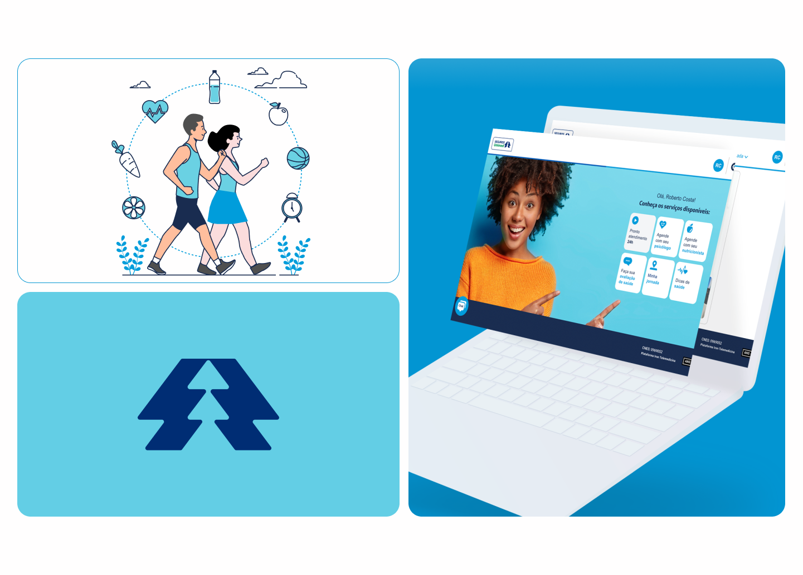
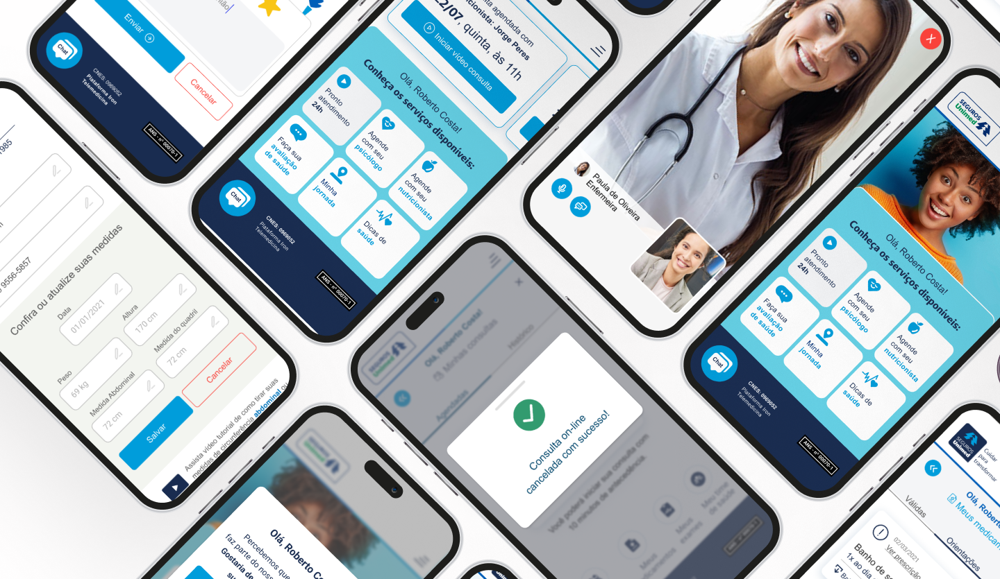

Problem
Healthcare systems faced accessibility barriers, scheduling complexity, and fragmented service delivery. Remote care was becoming necessary, but existing apps felt generic or untrustworthy.
HEALTHCARE · PRODUCT DESIGN
Unimed Seguros is the insurance arm of Unimed, Brazil's largest healthcare cooperative network. The desktop and mobile app design aimed to simplify insurance management and healthcare access for millions of users, delivered during the COVID-19 timeline, with user research and a strong focus on accessibility and usability.

Healthcare systems faced accessibility barriers, scheduling complexity, and fragmented service delivery. Remote care was becoming necessary, but existing apps felt generic or untrustworthy.
Telemedicine app structured around clarity, consistency, and care. Guided appointment flows, consultation interface, and health history in one predictable experience. Sign in → schedule → consult → follow up
Improved remote care access, higher engagement in scheduling flows, and positive user feedback on ease and reassurance.


Unimed Seguros is the insurance arm of Unimed, Brazil's largest healthcare cooperative network. The mobile app design aimed to simplify insurance management and healthcare access for millions of users, delivered during the COVID-19 timeline with user research and a strong focus on accessibility.
Working with Karla Granadeiro, I owned UX research, workflow design, and user-centric interface design in an institutional healthcare environment where trust and clarity matter more than visual flair.
UX research: Surveys, interviews, and telemedicine behavior analysis to identify pain points around digital health confidence.
Workflow design: Structured consultation flows from symptom description to scheduling, confirmation, and follow-up.
Interface design: Screens prioritizing readable information, clear actions, and consistent visual cues.
Design system: Neutral color system, accessible typography, and functional iconography aligned with institutional healthcare values.
In health products, clarity and predictability matter more than bells and whistles. Every tap had to feel safe and purposeful.
Healthcare systems often faced barriers around accessibility, scheduling complexity, and fragmented service delivery, especially when remote care was becoming a necessary alternative to physical appointments.
Unimed needed a solution that could simplify remote access to healthcare professionals, provide structured consultation flows with clear user guidance, maintain credibility through every interaction, and work intuitively for a broad audience with varying levels of tech literacy.
Existing options in the app market were either too generic or lacked the tailored experience needed for a large institutional user group.
Health urgency increases stress. The UI needed to reduce cognitive load, not add to it.
The goal was to enable virtual consultations, make remote medical access feel as trustworthy as in-person care, support a seamless UX from login to consultation completion, and reduce complexity and anxiety around healthcare decisions.
The Unimed Seguros telemedicine app was structured around four core experience pillars:
Every interaction was designed to feel supportive and predictable, addressing a common user concern: "Will this actually work when I need it?"



Trust and clarity mattered more than flashy visuals. The interface had to feel institutional and reliable while staying easy to navigate.
Research showed users wanted clear next steps, not a menu of possibilities. Every screen guides toward one primary action. Health urgency increases stress, so cognitive load had to stay low.
Neutral colors, accessible typography, and functional iconography aligned with Unimed's core values. The UI adopted visual elements that feel calming and professional, not trendy or decorative.
Users always understood where they were in the process. Consistent visual cues and readable information hierarchy reduced anxiety at every step from sign-in to consultation completion.


Design decisions were informed by analysis of telemedicine behaviors, surveys and interviews with users seeking remote consultation, pain point identification around digital health confidence, and benchmarking against other healthcare apps.
Key user insights
These insights helped shape a workflow where every tap feels safe and purposeful.
The interface was designed with minimal cognitive effort, functional clarity, predictable guidance through health flows, and accessible language for users of all tech levels.
Neutral color system
Calming and professional tones aligned with institutional healthcare expectations.
Accessible typography
Readable type at every size. Important elements stand out without visual noise.
Functional iconography
Supportive visual cues that reinforce actions, not decorate screens.
Clarity-based hierarchy
Important elements stand out. Everything else supports the primary health action.


Improved remote care access: Users could consult doctors without visiting physical clinics.
Higher engagement: Clear, guided flows reduced drop-offs in scheduling.
Positive user feedback: Users reported the app felt easy and reassuring.
Stronger institutional trust: The experience reinforced Unimed Seguros as a supportive healthcare partner.
In health products, clarity and predictability matter more than bells and whistles. UX that reduces anxiety directly improves engagement.
Clarity beats complexity in healthcare.
Users under health stress need predictable structure, not feature-rich dashboards.
Anxiety reduction is an engagement metric.
When users feel reassured at each step, they complete flows they would otherwise abandon.
Institutional products need empathy-driven language.
Accessible copy and calm visuals reinforce trust as much as the underlying service quality.